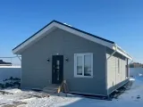

О проекте КД-54
Небольшой дом для постоянного проживания с двумя вариантами планировки. К дому можно добавить открытую террасу.
Обсудите, какой вариант планировки удобнее, нужна ли терраса и какая отделка подходит.
Описание проекта в сообществе VK →Каркасный дом 6 × 9 м
Небольшой дом для постоянного проживания с двумя вариантами планировки. К дому можно добавить открытую террасу.
Цена в каталоге VK. Комплектацию уточняйте при расчёте.
 Визуализация
Визуализация
Построенный КД-54 — фото из публикации VK
Нажмите на миниатюру, чтобы сменить изображение.
Небольшой дом для постоянного проживания с двумя вариантами планировки. К дому можно добавить открытую террасу.
Обсудите, какой вариант планировки удобнее, нужна ли терраса и какая отделка подходит.
Описание проекта в сообществе VK →| Общая площадь | 54 м² |
|---|---|
| Тёплая площадь | 48 м² |
| Габариты | 6 × 9 м |
| Технология | Деревянный каркас |
| Планировки | 2 варианта |
Чертежи из публикации Bal House. Обсудите изменения под ваш участок и состав семьи.
В публикации от 14 марта 2025 года: тёплый контур — 1 400 000 ₽, под ключ — 1 900 000 ₽. Актуальную стоимость и состав обеих комплектаций уточните у Bal House.
Попросите расчёт с перечнем включённых работ и материалов. Это поможет сравнить варианты по одинаковому составу.
Уточнить комплектацию| Утепление стен | 150 мм |
|---|---|
| Утепление пола | 200 мм |
| Утепление крыши | 200 мм |
 Визуализация
ВизуализацияОдноэтажный каменный дом с большой террасой
 Визуализация
ВизуализацияОдноэтажный каменный дом для семьи
 Визуализация
ВизуализацияКомпактный каркасный дом 6 × 9 м
Уточним планировку и состав работ для проекта КД-54.